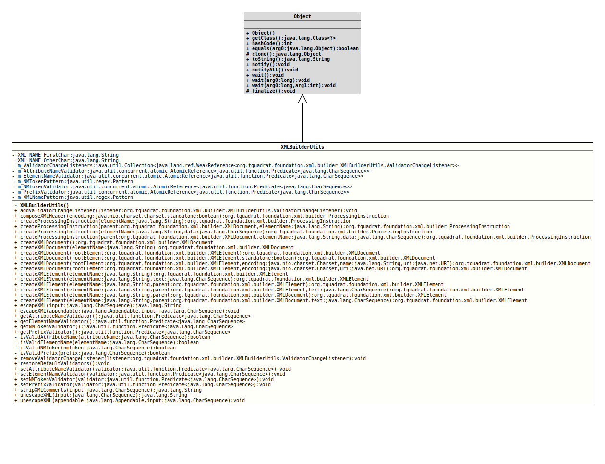

Class XMLBuilderUtils
- Author:
- Thomas Thrien (thomas.thrien@tquadrat.org)
- Version:
- $Id: XMLBuilderUtils.java 1101 2024-02-18 00:18:48Z tquadrat $
- Since:
- 0.0.5
- UML Diagram
-

UML Diagram for "org.tquadrat.foundation.xml.builder.XMLBuilderUtils"
{kind=link}
-
Nested Class Summary
Nested ClassesModifier and TypeClassDescriptionstatic enumThe (default) validators.static classTheEventObjectfor changes to the validator configuration.static interfaceThe interface for listeners toXMLBuilderUtils.ValidatorChangeEvents -
Field Summary
FieldsModifier and TypeFieldDescriptionprivate static final AtomicReference<Predicate<CharSequence>> The method that validates an XML attribute name.private static final AtomicReference<Predicate<CharSequence>> The method that validates an XML element name.private static final PatternThe pattern that is used to validate a nmtoken.private static final AtomicReference<Predicate<CharSequence>> The method that validates an XML nmtoken.private static final AtomicReference<Predicate<CharSequence>> The method that validates an XML namespace prefix.private static final Collection<WeakReference<XMLBuilderUtils.ValidatorChangeListener>> The validator change listeners.private static final PatternThe pattern that is used to validate an XML name.private static final StringThe regular expression for a valid start character of an XML name.private static final StringThe regular expression for a character that is valid for an XML after the first character. -
Constructor Summary
Constructors -
Method Summary
Modifier and TypeMethodDescriptionstatic final voidAdds a validator change listener.static final ProcessingInstructioncomposeXMLHeader(Charset encoding, boolean standalone) Composes theProcessingInstructionfor the XML file header.static final ProcessingInstructioncreateProcessingInstruction(String elementName) Creates aProcessingInstruction.static final ProcessingInstructioncreateProcessingInstruction(String elementName, CharSequence data) Creates aProcessingInstruction.static final ProcessingInstructioncreateProcessingInstruction(XMLDocument parent, String elementName) Creates aProcessingInstruction.static final ProcessingInstructioncreateProcessingInstruction(XMLDocument parent, String elementName, CharSequence data) Creates aProcessingInstruction.static final XMLDocumentCreates an XML document that will not have an explicit doc type, the root element will be<root>static final XMLDocumentcreateXMLDocument(String elementName) Creates an XML document that uses the given element name for the root element.static final XMLDocumentcreateXMLDocument(XMLElement rootElement) Creates an XML document that uses the given element for the root element.static final XMLDocumentcreateXMLDocument(XMLElement rootElement, boolean standalone) Creates an XML document that uses the given element for the root element.static final XMLDocumentcreateXMLDocument(XMLElement rootElement, Charset encoding, String name, URI uri) Creates an XML document that uses the given element for the root element with the given encoding and DTD.static final XMLDocumentcreateXMLDocument(XMLElement rootElement, Charset encoding, URI uri) Creates an XML document that uses the given element for the root element with the given encoding and DTD.static final XMLElementcreateXMLElement(String elementName) Creates an XML element for the given element name that supports attributes, namespaces, children, text,CDATAand comments.
The given element name is validated using the method that is provided bygetElementNameValidator().
The new element allows attributes and children, but will not validate them.static final XMLElementcreateXMLElement(String elementName, CharSequence text) Creates an XML element for the given element name that supports attributes, namespaces, children, text,CDATAand comments, and add the given text.static final XMLElementcreateXMLElement(String elementName, XMLDocument parent) Creates an XML element for the given tag and adds it as child to the given document.
The given element name is validated using the method that is provided bygetElementNameValidator().
The new element allows attributes and children, but will not validate them.static final XMLElementcreateXMLElement(String elementName, XMLDocument parent, CharSequence text) Creates an XML element for the given tag and with the given text, and adds it as child to the given document.
The given element name is validated using the method that is provided bygetElementNameValidator().
The new element allows attributes and children, but will not validate them.static final XMLElementcreateXMLElement(String elementName, XMLElement parent) Creates an XML element for the given element name that supports attributes, namespaces, children, text,CDATAand comments, and adds it as child to the given parent.
The given element name is validated using the method that is provided bygetElementNameValidator().
The new element allows attributes and children, but will not validate them.static final XMLElementcreateXMLElement(String elementName, XMLElement parent, CharSequence text) Creates an XML element for the given element name that supports attributes, namespaces, children, text,CDATAand comments, adds the given text, and adds it as child to the given parent.
The given element name is validated using the method that is provided bygetElementNameValidator().
The new element allows attributes and children, but will not validate them.static voidescapeXML(Appendable appendable, CharSequence input) Escapes the characters in aStringusing XML entities and writes them to anAppendable.
For example:
"bread" & "butter"
becomes:
"bread" & "butter".
Delegates toStringUtils.escapeXML(Appendable,CharSequence).static StringescapeXML(CharSequence input) Escapes the characters in aStringusing XML entities.
For example:
"bread" & "butter"
becomes:
"bread" & "butter".
Delegates toStringUtils.escapeXML(CharSequence).static final Predicate<CharSequence> Returns the method to validate attribute names.static final Predicate<CharSequence> Returns the method to validate element names.static final Predicate<CharSequence> Returns the method to validatenmtokens.static final Predicate<CharSequence> Returns the method to validate prefixes.private static final booleanisValidAttributeName(CharSequence attributeName) The default implementation for an attribute name validator.private static final booleanisValidElementName(CharSequence elementName) The default implementation for an element name validator.private static final booleanisValidNMToken(CharSequence nmtoken) The default implementation for an NMToken validator.private static final booleanisValidPrefix(CharSequence prefix) The default implementation for a prefix validator.static final voidRemoves the given validator change listener.static final voidSets the validators back to the default configuration.static final voidsetAttributeNameValidator(Predicate<CharSequence> validator) Sets the method to validate attribute names.static final voidsetElementNameValidator(Predicate<CharSequence> validator) Sets the method to validate element names.static final voidsetNMTokenValidator(Predicate<CharSequence> validator) Sets the method to validatenmtokens.static final voidsetPrefixValidator(Predicate<CharSequence> validator) Sets the method to validate prefixes.static final StringstripXMLComments(CharSequence input) Strips HTML or XML comments from the given String.static final voidunescapeXML(Appendable appendable, CharSequence input) Unescapes an XML String containing XML entity escapes to a String containing the actual Unicode characters corresponding to the escapes and writes it to the givenAppendable.
If an entity is unrecognised, it is left alone, and inserted verbatim into the result string. e.g.static final StringunescapeXML(CharSequence input) Unescapes an XML string containing XML entity escapes to a string containing the actual Unicode characters corresponding to the escapes.
If an entity is unrecognised, it is left alone, and inserted verbatim into the result string. e.g.
-
Field Details
-
XML_NAME_FirstChar
The regular expression for a valid start character of an XML name. Usually, the colon (':') is also allowed, but for namespace aware parsers, this is used as the separator between the namespace prefix and the name itself.- See Also:
-
XML_NAME_OtherChar
The regular expression for a character that is valid for an XML after the first character. Usually, the colon (':') is also allowed, but for namespace aware parsers, this is used as the separator between the namespace prefix and the name itself.- See Also:
-
m_ValidatorChangeListeners
private static final Collection<WeakReference<XMLBuilderUtils.ValidatorChangeListener>> m_ValidatorChangeListenersThe validator change listeners. -
m_AttributeNameValidator
The method that validates an XML attribute name. -
m_ElementNameValidator
The method that validates an XML element name. -
m_NMTokenPattern
The pattern that is used to validate a nmtoken. -
m_NMTokenValidator
The method that validates an XML nmtoken. -
m_PrefixValidator
The method that validates an XML namespace prefix. -
m_XMLNamePattern
The pattern that is used to validate an XML name.
-
-
Constructor Details
-
XMLBuilderUtils
private XMLBuilderUtils()No instance allowed for this class.
-
-
Method Details
-
addValidatorChangeListener
@API(status=STABLE, since="0.0.5") public static final void addValidatorChangeListener(XMLBuilderUtils.ValidatorChangeListener listener) Adds a validator change listener.- Parameters:
listener- The listener.
-
composeXMLHeader
@API(status=STABLE, since="0.0.5") public static final ProcessingInstruction composeXMLHeader(Charset encoding, boolean standalone) Composes theProcessingInstructionfor the XML file header.- Parameters:
encoding- The encoding for the resulting document.standalone-trueif the XML document is standalone,falseif not.- Returns:
- The new processing instruction.
-
createProcessingInstruction
@API(status=STABLE, since="0.0.5") public static final ProcessingInstruction createProcessingInstruction(String elementName) Creates aProcessingInstruction.- Parameters:
elementName- The name for the processing instruction.- Returns:
- The new processing instruction.
-
createProcessingInstruction
@API(status=STABLE, since="0.0.5") public static final ProcessingInstruction createProcessingInstruction(XMLDocument parent, String elementName) Creates aProcessingInstruction.- Parameters:
parent- The document that owns the new procession instruction.elementName- The name for the processing instruction.- Returns:
- The new processing instruction.
-
createProcessingInstruction
@API(status=STABLE, since="0.0.5") public static final ProcessingInstruction createProcessingInstruction(String elementName, CharSequence data) Creates aProcessingInstruction.- Parameters:
elementName- The name for the processing instruction.data- The data for the processing instruction.- Returns:
- The new processing instruction.
-
createProcessingInstruction
@API(status=STABLE, since="0.0.5") public static final ProcessingInstruction createProcessingInstruction(XMLDocument parent, String elementName, CharSequence data) Creates aProcessingInstruction.- Parameters:
parent- The document that owns the new procession instruction.elementName- The name for the processing instruction.data- The data for the processing instruction.- Returns:
- The new processing instruction.
-
createXMLDocument
Creates an XML document that will not have an explicit doc type, the root element will be
<root>. The encoding is defined as UTF-8.Basically, this document would have the DTD
.<!ELEMENT root ANY>The root element allows attributes and children, but will not validate them. It also allows text.
- Returns:
- The new XML document.
-
createXMLDocument
@API(status=STABLE, since="0.0.5") public static final XMLDocument createXMLDocument(String elementName) Creates an XML document that uses the given element name for the root element.
The given element name is validated using the method that is provided by
getElementNameValidator().The created root element allows attributes and children, but will not validate them. It also allows text.
- Parameters:
elementName- The element name.- Returns:
- The new XML document.
-
createXMLDocument
@API(status=STABLE, since="0.0.5") public static final XMLDocument createXMLDocument(XMLElement rootElement) Creates an XML document that uses the given element for the root element.- Parameters:
rootElement- The root element.- Returns:
- The new XML document.
-
createXMLDocument
@API(status=STABLE, since="0.0.5") public static final XMLDocument createXMLDocument(XMLElement rootElement, boolean standalone) Creates an XML document that uses the given element for the root element.- Parameters:
rootElement- The root element.standalone-truefor a standalone document,falseotherwise.- Returns:
- The new XML document.
-
createXMLDocument
@API(status=STABLE, since="0.0.5") public static final XMLDocument createXMLDocument(XMLElement rootElement, Charset encoding, String name, URI uri) Creates an XML document that uses the given element for the root element with the given encoding and DTD.- Parameters:
rootElement- The root element for this document.encoding- The encoding for the new XML document.name- The name for the DTD.uri- The URI for the DTD.- Returns:
- The new XML document.
-
createXMLDocument
@API(status=STABLE, since="0.0.5") public static final XMLDocument createXMLDocument(XMLElement rootElement, Charset encoding, URI uri) Creates an XML document that uses the given element for the root element with the given encoding and DTD.- Parameters:
rootElement- The root element for this document.encoding- The encoding for the new XML document.uri- The URI for the DTD.- Returns:
- The new XML document.
-
createXMLElement
@API(status=STABLE, since="0.0.5") public static final XMLElement createXMLElement(String elementName) Creates an XML element for the given element name that supports attributes, namespaces, children, text,CDATAand comments.
The given element name is validated using the method that is provided bygetElementNameValidator().
The new element allows attributes and children, but will not validate them. It also allows text.- Parameters:
elementName- The element name.- Returns:
- The new XML element.
-
createXMLElement
@API(status=STABLE, since="0.0.5") public static final XMLElement createXMLElement(String elementName, CharSequence text) Creates an XML element for the given element name that supports attributes, namespaces, children, text,
CDATAand comments, and add the given text.The given element name is validated using the method that is provided by
getElementNameValidator().The new element allows attributes and children, but will not validate them. It also allows text (obviously).
- Parameters:
elementName- The element name.text- The text for the new element.- Returns:
- The new XML element.
-
createXMLElement
@API(status=STABLE, since="0.0.5") public static final XMLElement createXMLElement(String elementName, XMLElement parent) Creates an XML element for the given element name that supports attributes, namespaces, children, text,CDATAand comments, and adds it as child to the given parent.
The given element name is validated using the method that is provided bygetElementNameValidator().
The new element allows attributes and children, but will not validate them. It also allows text.- Parameters:
elementName- The element name.parent- The parent element.- Returns:
- The new XML element.
-
createXMLElement
@API(status=STABLE, since="0.0.5") public static final XMLElement createXMLElement(String elementName, XMLElement parent, CharSequence text) Creates an XML element for the given element name that supports attributes, namespaces, children, text,CDATAand comments, adds the given text, and adds it as child to the given parent.
The given element name is validated using the method that is provided bygetElementNameValidator().
The new element allows attributes and children, but will not validate them. It also allows text (obviously).- Parameters:
elementName- The element name.parent- The parent element.text- The text for the new element.- Returns:
- The new XML element.
-
createXMLElement
@API(status=STABLE, since="0.0.5") public static final XMLElement createXMLElement(String elementName, XMLDocument parent) Creates an XML element for the given tag and adds it as child to the given document.
The given element name is validated using the method that is provided bygetElementNameValidator().
The new element allows attributes and children, but will not validate them. It also allows text.- Parameters:
elementName- The element name.parent- The document.- Returns:
- The new XML element.
-
createXMLElement
@API(status=STABLE, since="0.0.5") public static final XMLElement createXMLElement(String elementName, XMLDocument parent, CharSequence text) Creates an XML element for the given tag and with the given text, and adds it as child to the given document.
The given element name is validated using the method that is provided bygetElementNameValidator().
The new element allows attributes and children, but will not validate them. It also allows text (obviously).- Parameters:
elementName- The element name.parent- The document.text- The text for the new element.- Returns:
- The new XML element.
-
escapeXML
Escapes the characters in aStringusing XML entities.
For example:
"bread" & "butter"
becomes:
"bread" & "butter".
Delegates toStringUtils.escapeXML(CharSequence).- Parameters:
input- TheStringto escape, may be null.- Returns:
- A new escaped
String, ornullif the argument was alreadynull. - See Also:
-
escapeXML
@API(status=STABLE, since="0.0.5") public static void escapeXML(Appendable appendable, CharSequence input) throws IOException Escapes the characters in aStringusing XML entities and writes them to anAppendable.
For example:
"bread" & "butter"
becomes:
"bread" & "butter".
Delegates toStringUtils.escapeXML(Appendable,CharSequence).- Parameters:
appendable- The appendable object receiving the escaped string.input- TheStringto escape, may benull.- Throws:
NullArgumentException- The appendable isnull.IOException- whenAppendablepassed throws the exception from calls to theAppendable.append(char)method.- See Also:
-
getAttributeNameValidator
@API(status=STABLE, since="0.0.5") public static final Predicate<CharSequence> getAttributeNameValidator()Returns the method to validate attribute names.- Returns:
- The validator method.
-
getElementNameValidator
@API(status=STABLE, since="0.0.5") public static final Predicate<CharSequence> getElementNameValidator()Returns the method to validate element names.- Returns:
- The validator method.
-
getNMTokenValidator
@API(status=STABLE, since="0.0.5") public static final Predicate<CharSequence> getNMTokenValidator()Returns the method to validatenmtokens.- Returns:
- The validator method.
-
getPrefixValidator
Returns the method to validate prefixes.- Returns:
- The validator method.
-
isValidAttributeName
The default implementation for an attribute name validator.- Parameters:
attributeName- The name to test.- Returns:
trueif the given name is valid,falseotherwise.- See Also:
-
isValidElementName
The default implementation for an element name validator.- Parameters:
elementName- The name to test.- Returns:
trueif the given name is valid,falseotherwise.- See Also:
-
isValidNMToken
The default implementation for an NMToken validator.- Parameters:
nmtoken- The NMToken to test.- Returns:
trueif the given NMToke is valid,falseotherwise.- See Also:
-
isValidPrefix
The default implementation for a prefix validator.- Parameters:
prefix- The prefix to test.- Returns:
trueif the given prefix is valid,falseotherwise.- See Also:
-
removeValidatorChangeListener
@API(status=STABLE, since="0.0.5") public static final void removeValidatorChangeListener(XMLBuilderUtils.ValidatorChangeListener listener) Removes the given validator change listener.- Parameters:
listener- The listener to remove.
-
restoreDefaultValidators
Sets the validators back to the default configuration. The current validators are abandoned.- See Also:
-
setAttributeNameValidator
@API(status=STABLE, since="0.0.5") public static final void setAttributeNameValidator(Predicate<CharSequence> validator) Sets the method to validate attribute names.- Parameters:
validator- The validator method.
-
setElementNameValidator
@API(status=STABLE, since="0.0.5") public static final void setElementNameValidator(Predicate<CharSequence> validator) Sets the method to validate element names.- Parameters:
validator- The validator method.
-
setNMTokenValidator
@API(status=STABLE, since="0.0.5") public static final void setNMTokenValidator(Predicate<CharSequence> validator) Sets the method to validatenmtokens.- Parameters:
validator- The validator method.
-
setPrefixValidator
@API(status=STABLE, since="0.0.5") public static final void setPrefixValidator(Predicate<CharSequence> validator) Sets the method to validate prefixes.- Parameters:
validator- The validator method.
-
stripXMLComments
Strips HTML or XML comments from the given String.
Delegates to
StringUtils.stripXMLComments(CharSequence).- Parameters:
input- The HTML/XML string.- Returns:
- The string without the comments.
-
unescapeXML
Unescapes an XML string containing XML entity escapes to a string containing the actual Unicode characters corresponding to the escapes.
If an entity is unrecognised, it is left alone, and inserted verbatim into the result string. e.g. ">&zzzz;x" will become ">&zzzz;x".
Delegates toStringUtils.unescapeXML(CharSequence).- Parameters:
input- TheStringto unescape, may benull.- Returns:
- A new unescaped
String,nullif the given string was alreadynull. - See Also:
-
unescapeXML
@API(status=STABLE, since="0.0.5") public static final void unescapeXML(Appendable appendable, CharSequence input) throws IOException Unescapes an XML String containing XML entity escapes to a String containing the actual Unicode characters corresponding to the escapes and writes it to the givenAppendable.
If an entity is unrecognised, it is left alone, and inserted verbatim into the result string. e.g. ">&zzzz;x" will become ">&zzzz;x".
Delegates toStringUtils.unescapeXML(Appendable,CharSequence).- Parameters:
appendable- The appendable receiving the unescaped string.input- TheStringto unescape, may benull.- Throws:
NullArgumentException- The writer isnull.IOException- An IOException occurred.- See Also:
-